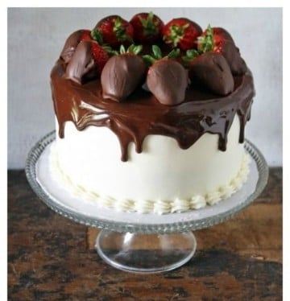

Blog de recetas de repostería | María Lunarillos | Recetas de repostería paso a paso con fotos.
 Recetas Repostería Básicos Bizcochos Bollería Bundt Cakes Chocolate Cremas y Rellenos Cupcakes Dulces tradicionales Fondant y Modelado Galletas Helados y semifríos Layer Cakes Magdalenas y Muffins Mousses Panes Pasteles Postres de cuchara Tartas Tartas de queso Recetas saladas Recetas con Lékué Recetas con Silikomart Recetas por ocasión San Valentín Carnaval Semana Santa Monas de Pascua Día del padre Día de la madre Comuniones Halloween Navidad Recetas sin Sin gluten Sin horno Tutoriales E-book TiendaVER MÁS
VER MÁS
Recetas Repostería Básicos Bizcochos Bollería Bundt Cakes Chocolate Cremas y Rellenos Cupcakes Dulces tradicionales Fondant y Modelado Galletas Helados y semifríos Layer Cakes Magdalenas y Muffins Mousses Panes Pasteles Postres de cuchara Tartas Tartas de queso Recetas saladas Recetas con Lékué Recetas con Silikomart Recetas por ocasión San Valentín Carnaval Semana Santa Monas de Pascua Día del padre Día de la madre Comuniones Halloween Navidad Recetas sin Sin gluten Sin horno Tutoriales E-book Tienda Recetas Repostería Básicos Bizcochos Bollería Bundt Cakes Chocolate Cremas y Rellenos Cupcakes Dulces tradicionales Fondant y Modelado Galletas Helados y semifríos Layer Cakes Magdalenas y Muffins Mousses Panes Pasteles Postres de cuchara Tartas Tartas de queso Recetas saladas Recetas con Lékué Recetas con Silikomart Recetas por ocasión San Valentín Carnaval Semana Santa Monas de Pascua Día del padre Día de la madre Comuniones Halloween Navidad Recetas sin Sin gluten Sin horno Tutoriales E-book TiendaInicio > Blog
Blog
LO + NUEVOCheesecake crujiente de manzana
Descubre cómo preparar esta tarta de queso con relleno de manzana caramelizada y cubierta con crujiente de galleta....
Tartaleta sin horno de chocolate y frambuesa
Receta paso a paso con fotos de tartaleta sin horno de frambuesa y chocolate, decorada con perlas y flores de azúcar....
Tarta aniversario de fresas
Aprende a elaborar esta tarta de capas, perfecta para un aniversario, con relleno de fresas y decoración con Dalia comestible....
Ver más recetas TARTASCheesecake crujiente de manzana
Descubre cómo preparar esta tarta de queso con relleno de manzana caramelizada y cubierta con crujiente de galleta....
Tartaleta sin horno de chocolate y frambuesa
Receta paso a paso con fotos de tartaleta sin horno de frambuesa y chocolate, decorada con perlas y flores de azúcar....
Tarta aniversario de fresas
Aprende a elaborar esta tarta de capas, perfecta para un aniversario, con relleno de fresas y decoración con Dalia comestible....
Ver más tartas BUNDT CAKESRed Velvet bundt cake para San Valentín
Bundt cake marmolado red velvet, especial para San Valentín. Receta paso a paso....
Bundt cake remolino de frambuesa
Receta paso a paso de bundt cake de vainilla con remolino y cobertura de frambuesas....
Bundt cake de limón y semillas de amapola
Receta paso a paso con fotos para elaborar un delicioso bundt cake de sabor intenso a limón con semillas de amapola....
Ver más bundt cakes GALLETASReceta de galletas seta
Receta de divertidas galletas especiadas con forma de seta. Las decoramos con chocolate, semillas de amapola y azúcar de colores....
Minitartas corazón para San Valentín
Minitartitas de galleta con forma de corazón para San Valentín. Receta fácil paso a paso....
Corazones de chocolate para San Valentín
Receta de galletas de chocolate en forma de corazón, perfectas para San Valentín....
Ver más galletas MAGDALENASCupcakes con bigotes para el Día del Padre
Receta paso a paso con fotos para preparar unos sencillos cupcakes con bigotes de chocolate, especiales para el Día del Padre....
Muffins de chocolate tipo Starbucks
Receta paso a paso con fotos de muffins caseros de chocolate, estilo Starbucks. Receta fácil....
Muffins saludables de calabaza sin gluten
Receta de muffins sin gluten ni azúcar. Receta con fotos paso a paso, trucos y consejos de la elaboración....
Ver más magdalenas TUTORIALESCómo hacer una tarta de bordes perfectos con discos acrílicos
Cómo hacer una tarta de bordes perfectos con discos acrílicos. Receta paso a paso de layer cake y tutorial detallado....
Cómo usar Sweet Stamp sobre una tarta de fondant
Aprende a decorar una tarta de fondant con Sweet Stamp. Tutorial paso a paso con fotos detalle del proceso....
Cómo adaptar recetas a un tamaño de molde diferente
Descubre cómo adaptar recetas a un tamaño de molde diferente del original, tanto redondos como cuadrados....
Ver más tutoriales TIENDA Ven a la tienda INSTAGRAM Síguenos¿YA HAS ELEGIDO NUEVA RECETA? PÁSATE POR LA TIENDA, Y ENCUENTRA EL UTENSILIO PERFECTO. IR A LA TIENDA > Este es el blog de recetas de la tienda online de utensilios de repostería María Lunarillos . Aquí encontrarás las mejores recetas de repostería con fotos paso a paso para disfrutar en casa de un buen postre o una buena tarta. También encontrarás recetas de pan , así como tutoriales para saber más y los mejores e-books de recetas gratis . ¡Dísfrutalo todo! Si quieres contactar con nosotros, puedes escribirnos a hola@marialunarillos.com .